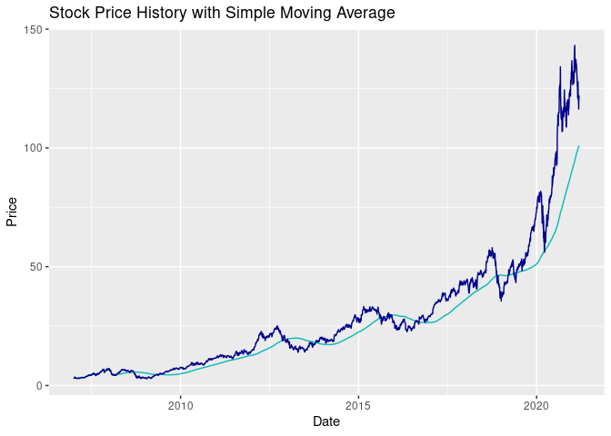
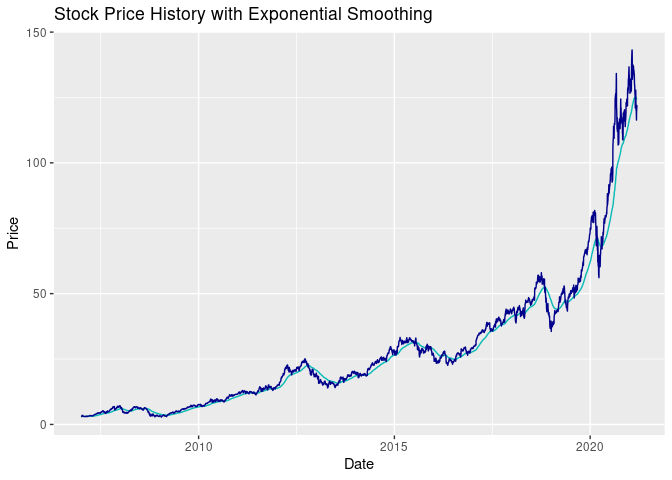

This is an R package that provides basic time series modelling functionalities to analyze historical stock prices. Investment in the stock market requires not only knowledge about the listed companies, but also basic summary statistics and modellings of individual stock prices. Given time-series stock price data, this package provides key summary statistics, applies moving average and exponential smoothing models to the data, and visualizes in-sample moving average as well as exponential smoothing fits. A convenient use case for this package is to combine it with the quantmod library, which can provide well-formated stock price data.
Installation
You can install the development version from GitHub with:
# install.packages("devtools")
devtools::install_github("UBC-MDS/stockAnalyzer")Features
The package contains the following five functions:
summaryStats
This function calculates summary statistics including mean price, minimum price, maximum price, volatility and return rate based on daily historical stock prices. Users can specify the stock they are interested in.
movingAverage
This function applies the moving average model to all measurements of stock price and returns an xts time series object containing in-sample fitted values. Users can specify the length of moving average windows (unit: days).
exponentialSmoothing
This function performs exponential smoothing on historical stock price time series data. Users can specify the alpha parameter (which defines the weighting, ranging between 0 and 1) for smoothing.
visMovingAverage
This function creates a line chart showing the raw historical data and fitted data using the moving average method. Users are able to specify the xts object used, the column of choice for moving average calculation, and the length of moving average window (unit: days).
visExpSmoothing
This function creates a line chart showing the raw historical data and fitted data using the exponential smoothing method. Users are able to specify the xts object used, the column of choice for exponential smoothing calculation, and the alpha parameter (which defines the weighting, ranging between 0 and 1) for smoothing.
Example
This is a basic example which shows how to generate summary statistics, conduct moving average modelling, exponential smoothing modeling, and produce visualizations:
# Download stock price data
library(quantmod)
#> Loading required package: xts
#> Loading required package: zoo
#>
#> Attaching package: 'zoo'
#> The following objects are masked from 'package:base':
#>
#> as.Date, as.Date.numeric
#> Loading required package: TTR
#> Registered S3 method overwritten by 'quantmod':
#> method from
#> as.zoo.data.frame zoo
getSymbols("AAPL")
#> 'getSymbols' currently uses auto.assign=TRUE by default, but will
#> use auto.assign=FALSE in 0.5-0. You will still be able to use
#> 'loadSymbols' to automatically load data. getOption("getSymbols.env")
#> and getOption("getSymbols.auto.assign") will still be checked for
#> alternate defaults.
#>
#> This message is shown once per session and may be disabled by setting
#> options("getSymbols.warning4.0"=FALSE). See ?getSymbols for details.
#> [1] "AAPL"
library(stockAnalyzer)
summaryStats(AAPL)
#> # A tibble: 6 x 6
#> measurement mean min max volatility return
#> <chr> <dbl> <dbl> <dbl> <dbl> <dbl>
#> 1 AAPL.Open 29.1 2.84 144. 27.5 38.9
#> 2 AAPL.High 29.4 2.93 145. 27.8 38.8
#> 3 AAPL.Low 28.8 2.79 141. 27.1 40.1
#> 4 AAPL.Close 29.1 2.79 143. 27.5 39.3
#> 5 AAPL.Volume 412534449. 45448000 3372969600 381472747. -0.902
#> 6 AAPL.Adjusted 27.6 2.41 143. 27.7 45.8
head(movingAverage(AAPL, 300, paste("movingAverage", colnames(AAPL), sep="_")))
#> movingAverage_AAPL.Open movingAverage_AAPL.High
#> 2007-01-03 3.081786 3.092143
#> 2007-01-04 3.001786 3.069643
#> 2007-01-05 3.063214 3.078571
#> 2007-01-08 3.070000 3.090357
#> 2007-01-09 3.087500 3.320714
#> 2007-01-10 3.383929 3.492857
#> movingAverage_AAPL.Low movingAverage_AAPL.Close
#> 2007-01-03 2.925000 2.992857
#> 2007-01-04 2.993571 3.059286
#> 2007-01-05 3.014286 3.037500
#> 2007-01-08 3.045714 3.052500
#> 2007-01-09 3.041071 3.306071
#> 2007-01-10 3.337500 3.464286
#> movingAverage_AAPL.Volume movingAverage_AAPL.Adjusted
#> 2007-01-03 1238319600 2.577937
#> 2007-01-04 847260400 2.635158
#> 2007-01-05 834741600 2.616391
#> 2007-01-08 797106800 2.629312
#> 2007-01-09 3349298400 2.847729
#> 2007-01-10 2952880000 2.984010
head(exponentialSmoothing(AAPL,paste("expsmoothing", colnames(AAPL), sep="_"), 0.02))
#> expsmoothing_AAPL.Open expsmoothing_AAPL.High expsmoothing_AAPL.Low
#> 2007-01-03 3.081786 3.092143 2.925000
#> 2007-01-04 3.080186 3.091693 2.926371
#> 2007-01-05 3.079847 3.091431 2.928130
#> 2007-01-08 3.079650 3.091409 2.930481
#> 2007-01-09 3.079807 3.095995 2.932693
#> 2007-01-10 3.085889 3.103932 2.940789
#> expsmoothing_AAPL.Close expsmoothing_AAPL.Volume
#> 2007-01-03 2.992857 1238319600
#> 2007-01-04 2.994186 1230498416
#> 2007-01-05 2.995052 1222583280
#> 2007-01-08 2.996201 1214073750
#> 2007-01-09 3.002398 1256778243
#> 2007-01-10 3.011636 1290700278
#> expsmoothing_AAPL.Adjusted
#> 2007-01-03 2.577937
#> 2007-01-04 2.579081
#> 2007-01-05 2.579828
#> 2007-01-08 2.580817
#> 2007-01-09 2.586156
#> 2007-01-10 2.594113
visMovingAverage(AAPL, 300, 'AAPL.Close')
visExpSmoothing(AAPL, 0.02, 'AAPL.Close')
R Ecosystem
There are a number of libraries in the R ecosystem that provide functionalities to analyze time series data. For example, Tidyverse has comprehensive functionalities for basic summary statistics. Libraries including data.table, smooth provide functions to calculate moving average. Libraries including smooth and forecast both provide functions to conduct exponential smoothing. ggplot2 is most widely used for visualizations.
In terms of financial data analysis, there are also a wide range of packages. Widely used ones include RQuantLib, quantmod.